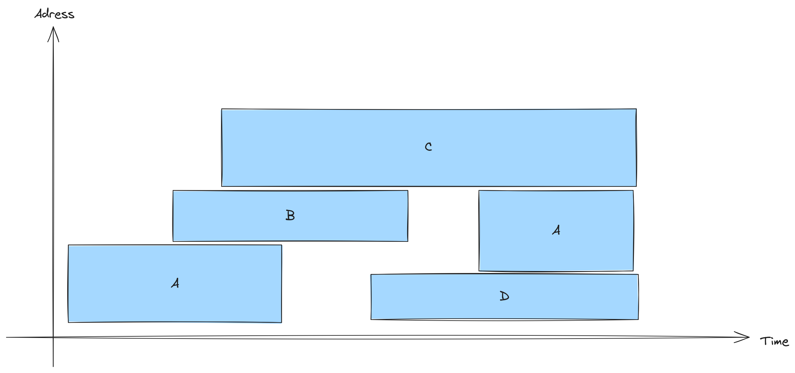

4 Blatt 04
Aufgabe 1
Ein Nachteil benannter Pipes ist, dass sie manuell im Dateisystem erstellt und verwaltet werden müssen (z. B. mit
mkfifo). Das macht die Handhabung aufwändiger und erfordert gegebenenfalls zusätzliche Aufräummaßnahmen.Wenn zwei voneinander unabhängige Prozesse (z. B. zwei Terminals) Daten austauschen sollen, ist eine benannte Pipe erforderlich. Anonyme Pipes funktionieren nur zwischen verwandten Prozessen (z. B. Eltern-Kind).
Aufgabe 2
Im Win32-API ist ein Handle vom Typ:
typedef void* HANDLE;Es handelt sich also um einen Zeiger (bzw. zeigerbreiten Wert), der jedoch nicht dereferenziert werden soll. Ein Handle ist ein undurchsichtiger Verweis auf eine Ressource, die vom Windows-Kernel verwaltet wird – etwa eine Datei, ein Prozess, ein Event oder ein Fensterobjekt.
Wenn ein Programm zum Beispiel
CreateFile()aufruft, gibt der Kernel einen solchen Handle zurück. Dieser verweist intern auf ein Objekt in der Handle-Tabelle des Prozesses. Diese Tabelle enthält Informationen wie Zugriffsrechte, aktuelle Dateiposition, Typ des Objekts usw.Im Unterschied zu Dateideskriptoren unter Unix/Linux (einfache Ganzzahlen) sind Win32-Handles allgemeiner gehalten und dienen zum Zugriff auf viele verschiedene Ressourcentypen – nicht nur auf Dateien.
Die Umleitung der Standardausgabe erfolgt im Win32-API in zwei Schritten:
- Eine Datei wird mit
CreateFile()geöffnet oder erzeugt. - Der Handle für
STD_OUTPUT_HANDLEwird mitSetStdHandle()auf diesen Datei-Handle gesetzt.
Beispiel:
#include <windows.h> #include <stdio.h> int main() { HANDLE hFile = CreateFile("output.txt", GENERIC_WRITE, 0, NULL, CREATE_ALWAYS, FILE_ATTRIBUTE_NORMAL, NULL); if (hFile == INVALID_HANDLE_VALUE) { printf("Fehler beim Öffnen der Datei.\n"); return 1; } // Standardausgabe umleiten SetStdHandle(STD_OUTPUT_HANDLE, hFile); // Alles, was an STD_OUTPUT_HANDLE geschrieben wird, geht nun in die Datei DWORD written; WriteFile(GetStdHandle(STD_OUTPUT_HANDLE), "Hello redirected world!\n", 24, &written, NULL); CloseHandle(hFile); return 0; }Diese Umleitung wirkt sich auf Low-Level-Funktionen wie
WriteFile()aus. Wenn man dagegen höhere Funktionen wieprintf()oderstd::coutumleiten will, muss zusätzlich die Laufzeitumgebung angepasst werden – etwa mitfreopen()oderstd::ios-Umleitungen.- Eine Datei wird mit
Aufgabe 3
Das Program: (Auch im Zip unter dem Verzeichniss A3 als reverse_pipechat.c enthalten)
reverse_pipechat.c
#include <stdio.h>
#include <stdlib.h>
#include <unistd.h>
#include <string.h>
#include <sys/wait.h>
#define BUFFER_SIZE 1024
// Utility: reverse a string in place
void reverse_string(char *str) {
int len = strlen(str);
for (int i = 0; i < len / 2; ++i) {
char tmp = str[i];
str[i] = str[len - 1 - i];
str[len - 1 - i] = tmp;
}
}
int main() {
int pipe_a_to_b[2]; // parent writes to child
int pipe_b_to_a[2]; // child writes to parent
if (pipe(pipe_a_to_b) == -1 || pipe(pipe_b_to_a) == -1) {
perror("pipe");
exit(EXIT_FAILURE);
}
pid_t pid = fork();
if (pid < 0) {
perror("fork");
exit(EXIT_FAILURE);
}
else if (pid == 0) {
// Child process: Process B
close(pipe_a_to_b[1]); // Close write end of A→B
close(pipe_b_to_a[0]); // Close read end of B→A
char buffer[BUFFER_SIZE];
// Read message from parent
ssize_t bytes_read = read(pipe_a_to_b[0], buffer, BUFFER_SIZE - 1);
if (bytes_read <= 0) {
perror("child read");
exit(EXIT_FAILURE);
}
buffer[bytes_read] = '\0'; // Null-terminate the string
reverse_string(buffer); // Reverse the string
// Send it back to parent
write(pipe_b_to_a[1], buffer, strlen(buffer));
// Close used pipe ends
close(pipe_a_to_b[0]);
close(pipe_b_to_a[1]);
exit(EXIT_SUCCESS);
} else {
// Parent process: Process A
close(pipe_a_to_b[0]); // Close read end of A→B
close(pipe_b_to_a[1]); // Close write end of B→A
char input[BUFFER_SIZE];
printf("Enter a string: ");
if (!fgets(input, BUFFER_SIZE, stdin)) {
perror("fgets");
exit(EXIT_FAILURE);
}
// Remove newline if present
input[strcspn(input, "\n")] = '\0';
// Send input to child
write(pipe_a_to_b[1], input, strlen(input));
char reversed[BUFFER_SIZE];
ssize_t bytes_received = read(pipe_b_to_a[0], reversed, BUFFER_SIZE - 1);
if (bytes_received <= 0) {
perror("parent read");
exit(EXIT_FAILURE);
}
reversed[bytes_received] = '\0'; // Null-terminate
printf("Reversed string: %s\n", reversed);
// Close used pipe ends
close(pipe_a_to_b[1]);
close(pipe_b_to_a[0]);
wait(NULL); // Wait for child to finish
}
return 0;
}Das C-Programm demonstriert die Kommunikation zwischen zwei Prozessen über anonyme Pipes. Der Elternprozess (A) liest eine Zeichenkette von der Standardeingabe und sendet sie an den Kindprozess (B). Dieser kehrt die Zeichenkette um und schickt sie zurück. Der Elternprozess gibt das Ergebnis anschließend auf der Standardausgabe aus.
Technisch funktioniert das Programm so: Es erstellt zwei Pipes – eine für die Kommunikation von A nach B, die andere für die Rückrichtung. Nach dem Aufruf von fork() schließt jeder Prozess die jeweils nicht benötigten Enden der Pipes. Der Elternprozess sendet die Benutzereingabe an das Kind, das die Zeichenkette verarbeitet und die Antwort zurückschickt. Beide Prozesse verwenden read() und write() zur Datenübertragung und beenden sich danach.
Kompilieren und ausführen kann man das Programm unter Verzeichniss A3 mit:
make
./pipe_exampleBeispielausgabe:
Enter a string: hallo welt
Reversed string: tlew ollahAufgabe 4
- :
- Fragmentiuerung: Intern. (Eine geringe Anzahl von langlebigen Objekten existieren in einem Page, was zur internen Speicherverschwendung führt)
- Definition der Internen Fragmentierung (in diesem Kontext): Speicherverschwendung innerhalb der Seite

timing diagram - :
- sehr häufig: fast immer handelt es sich um einen Tradeoff, z.B. beim best fit vs first fit handelt es sich um das Tradeoff Speichereffizienz vs Zeiteffizienz
- Tradeoff: Cache misses vs Interne Fragmentierung (Zeit vs Speicherplatz)
- Kleine Seiten: Wenig interne Fragmentierung aber häufige Cache misses \(\Rightarrow\) Zeitverschwendung
- Grosse Seiten: Seltene Cach misses aber sehr große interne Fragmentierung (da es häufig langlebige Objekte existieren) \(\Rightarrow\) Speicherverscwendung
Aufgabe 5
Interne vs. externe Fragmentierung:
- Interne Fragmentierung entsteht, wenn ein Prozess mehr Speicher zugewiesen bekommt, als er tatsächlich benötigt – z. B. bei festen Block- oder Seitengrößen bleibt ungenutzter Speicher innerhalb des Blocks.
- Externe Fragmentierung tritt auf, wenn der freie Speicher zwar insgesamt groß genug ist, aber in viele kleine, nicht zusammenhängende Stücke aufgeteilt ist, sodass größere Prozesse keinen passenden Platz finden.
Logische vs. physische Adressen:
- Logische Adressen (auch virtuelle Adressen) werden vom Prozess verwendet und beginnen meist bei 0 – sie sind unabhängig vom realen Speicherlayout.
- Physische Adressen geben die tatsächliche Position im Hauptspeicher (RAM) an. Das Betriebssystem bzw. die Hardware (MMU) wandelt logische Adressen zur Laufzeit in physische Adressen um.
Aufgabe 6
Kurze erklärung zur Notation A:B: Der Segment der Größe A wurde der Speicherlücke der Größe B zugewiesen. (Das ist eindeutig, da die Größen der Segmente und der Lücken jeweils eindeutig sind.)
Dann:
First fit:
12:20 11:18 3:10 5:7Best fit:
12:12 11:15 3:4 5:7Worst fit
12:20 11:18 3:15 5:12
Aufgabe 7
Da die Seitengröße 1 KB = 1024 Bytes = \(2^{10}\) beträgt, entsprechen die unteren 10 Bit des virtuellen Adresse die Offset, die restlichen höheren Bits geben die Seitennummer an.
Berechnung der Seitennummern und Offsets:
| Adresse | Seitennummer | Offset |
|---|---|---|
| 2456 | 2 | 408 |
| 16382 | 15 | 1022 |
| 30000 | 29 | 304 |
| 4385 | 4 | 289 |
C-Code:
// V - virtuelle Addresse, gegeben
int p = V >> 10; // Seitennummer
int offset = V & 0x3FF; // Offset (2^10 - 1 = 1023)Durch die Verwendung von Bitoperationen ist die Berechnung effizient, da die Seitengröße eine Zweierpotenz ist.